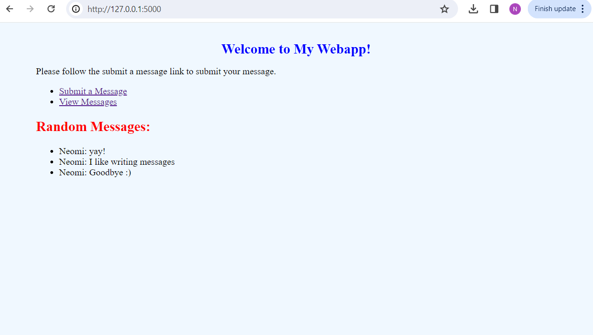
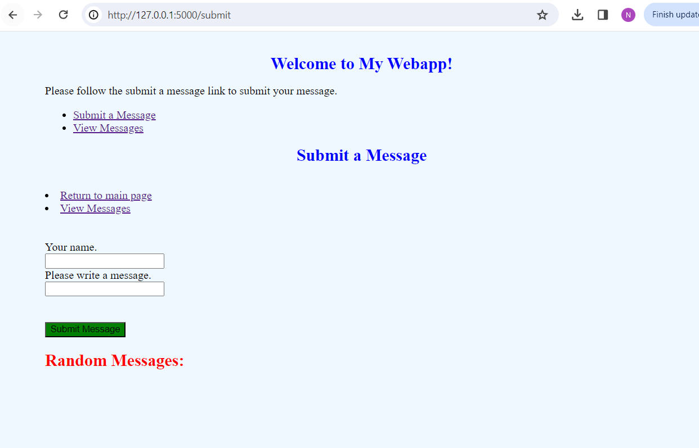

from flask import Flask, g, render_template, request
import sqlite3
import sklearn as sk
import matplotlib.pyplot as plt
import numpy as np
import pickle
import os
from matplotlib.backends.backend_agg import FigureCanvasAgg as FigureCanvas
from matplotlib.figure import Figure
import io
import base64HW3: Creating a Webapp
In this blog post I will go over how to develop and create your own webapp using Python and Flask!
To start I created a github repository where I placed all my files, so I could easily commit and push any changes I have made.
Here is the url for my repository : https://github.com/Neomi-G/HW_3
Step 1: Creating the HTML files
To first start I created three HTML files, base.html, submit.html, and view.html. each one of them fullfill a diffrent porpose that I will explain below. The app.py file is the application script file where is the main file that will handle the flask functions and any other function that we will use in the creation of the webapp.
Base.html
This HTML code sets up the main page that opens up when you open the URL. Within the first page, you are displayed with the two links, to either see the message or to submit a message, as well as a list of random messages that have been submitted previously. The other HTML sites will essentially inherent from the base page.
<!doctype html>Random Messages:
-
{% for message in messages %}
- {{ message[1] }}: {{ message[2] }} {% endfor %}
Submit.html
This html takes care of the page in which indvdiuals submit their message. They are asked to provide their name and submit a message. Once submitting, they can then also chose to see any previous message or be directed to main page.
{% extends ‘base.html’ %}
{% block header %}{% block title %}Submit a Message{% endblock %}
{% endblock %}
{% block content %}/* this sets up the two links for people to either view the message or go back to the first main page */
/* this will change the header to blue and the submit botton to green*/ /* this section prompts the users to write their name and leave a message, and creates the submit botton*/
{% endblock %}
View.html
This last html presents the messages that have been submmited and orders them inside a table so it is easier to view past messages. At the bottom of the post I also included the code for the style.css file. For now, the pourpose of that file is to modify the webapp by changing the color of the page, the font, the location of the text, and any other stylistic changes you wish to make.
<!doctype html>Below are your messages:
/* this for loop goes through all the messages and organizes them inside a table */ {% for message in messages %} {% endfor %}| ID | Name | Message |
|---|---|---|
| {{ message[0] }} | {{ message[1] }} | {{ message[2] }} |
submit another message
Important Note:
When working on this project you want to make sure your folder with all the files is organized in a certain way. Inside your project directory you want to have three main folders called: app.py, templates, and static. Inside the app.py you will have your functions, inside the templates you will add your base.html,submit.html, and view.html files. And lastly, inside the static folder you will have your style.css.
Step 2: Creat functions for data base mangment
Now that we have everything organized and set up we are ready to start writing the functions !
First we need to import all the packages we might be using
Route Functions
For this project we will need to use route functions. A route function is a URL patter that Flask is able to read and respond to. To ensure that a specific function is called and run when the URL is opned we use “@app.route” to indicate which function we want to use.
To create the flask web server instance run the following code:
app = Flask(__name__)Below are all the route functions we will need to use, after that I will go into the main functions that theses route functions are refering back to.
First we start by creating a database and naming it.The base function retrives 3 random messages and renders the base.html templetes, which also passes the messages to be displayed on the main page. The submit function takes the POST commend to add the message into the database. The submit.html templet is then rendered to prompt users to submit a message. Lastly, the message function retrives all the messages that were added to the database amd renders the view.html template which displays the messages to the users.
"""
This script contains routes and functions for a Flask web application.
It defines routes for the main page, message submission, and viewing messages.
"""
DATABASE = 'messages_db.sqlite'
"""
Renders the main page of the web application.
Retrieves 3 random messages and renders the 'base.html' template with these messages.
"""
@app.route('/')
def base():
messages = random_messages(3) # Retrieve 3 random messages
return render_template('base.html', messages=messages)
"""
Handles message submission.
If the request method is POST, it inserts the message into the database.
Renders the 'submit.html' template.
"""
@app.route('/submit', methods=['GET','POST'])
def submit():
if request.method == 'POST':
insert_message(request)
return render_template('submit.html')
"""
Displays all messages stored in the database.
Retrieves all messages from the database and renders the 'view.html' template with these messages.
"""
@app.route('/message')
def message():
db = get_message_db()
cursor = db.cursor()
cursor.execute("SELECT * FROM messages")
messages = cursor.fetchall()
cursor.close()
return render_template('view.html', messages=messages)
IndentationError: unindent does not match any outer indentation level (<tokenize>, line 17)Get_message_db function
The pourpose of this function is to handle the messages that are being submitted by creating a database. The function first checks the SQL database ( which is called message_db) to see if the database exists. If it does not, it creates a new one and stores it in g.message_db. Once that is done it followes the SQL command to create the message table with the added message, and end the connection once done.
# Function to get the message database
"""
Retrieve the SQLite database connection for storing messages.
If the 'message_db' attribute is not present in the global 'g' object,
it creates a new connection to the SQLite database defined by the
'DATABASE' constant. It also creates a 'messages' table in the database
if it doesn't already exist.
Returns:
- sqlite3.Connection: The SQLite database connection object.
"""
def get_message_db():
if 'message_db' not in g:
g.message_db = sqlite3.connect(DATABASE)
cursor = g.message_db.cursor()
cursor.execute('''CREATE TABLE IF NOT EXISTS messages (
id INTEGER PRIMARY KEY,
handle TEXT,
message TEXT
)''')
g.message_db.commit()
return g.message_db
We then need to create a function that inserts the message into the database.It retracts the name of the user and their message from the form data using the request.form[‘nm’] and request.form[‘message’].Then, it executes an SQL query to insert the name and message into the ‘messages’ table in the database.
Function to insert a user message into the database
This function than deals with storing the messages submitted by the users. it calles the get_message_db to connect back to the database, connect to the cursor and then followes the SQL command to add the message with the id ( the name inputted by the user) to the message table. Once that is done it commits the function and closes the database connection again
def insert_message(request):
"""
Insert a user message into the database.
Args:
- request (flask.request): The request object containing form data.
Returns:
- str: The message that was inserted into the database.
"""
db = get_message_db()
cursor = db.cursor()
name = request.form['nm']
message = request.form['message']
cursor.execute("INSERT INTO messages (handle, message) VALUES (?, ?)", (name, message))
db.commit()
cursor.close()
return message
IndentationError: unindent does not match any outer indentation level (<tokenize>, line 11)Random messages and View_message functions
Lastly, the last two functions display the page that presents the list of random messages and randomizes the message that are being presented.The functions are used to rabndomize five diffrent messages from the database. This will be seen in our main page. The function works by connecting to the cursor, executing SQL command by selecting rnaodm messages before closing the database connection again.
@app.route('/view_messages')
def view_messages():
"""
Display a page showing a random selection of messages.
Returns:
- flask.render_template: HTML page displaying the random messages.
"""
messages = random_messages(5) # You can change the number of messages to retrieve
return render_template('view.html', messages=messages)
# Function to retrieve n random messages from the database
def random_messages(n):
"""
Retrieve n random messages from the database.
Args:
- n (int): Number of random messages to retrieve.
Returns:
- list: A list of tuples containing the retrieved messages.
"""
db = get_message_db()
cursor = db.cursor()
cursor.execute("SELECT * FROM messages ORDER BY RANDOM() LIMIT ?", (n,))
messages = cursor.fetchall()
cursor.close()
db.close() # Close the database connection
return messagesNow is the fun part
Once we have wrote all the code and saved all the files we then run the following code in the terminal to publish the webapp and get the url for it
set FLASK_ENV=app.py
flask run
Here is what my webapp looks like
First is the main page the user sees when opening the URL . By looking the styl;e.css code at the bottom you can see how I chnaged the font and color of the page and words.
As you can see there are two links: submit message and view message in the main page. This is were our rout functions come into play. We are essentially calling submit.html and view.html routes in order to be able to be directed to another page

Message page
Once opening the submit a message url you are prompted to this page. Like I talked about before, this is where we need to utalize the Get and Post methods in order to be able to repsond to HTTP request and send the datat of the submitted messages.

Viewing the message
The last part is to send the users to a page where they can view their messages. This is where the message route message function and view.html come into play. Since we are not transmitting any data we will only be using the GET method in this route function. Below I added the route message again so we can further examine it
The function goes into the database with the messages and uses .fetchall() to select all the messages submitted by the user.Once it is done it makes sure to close the sursor again and return our view.html templet. By doing so we are able to see the page depicted below , with some of the message I wrote.
@app.route('/message')
def message():
db = get_message_db()
cursor = db.cursor()
cursor.execute("SELECT * FROM messages")
messages = cursor.fetchall()
cursor.close()
return render_template('view.html', messages=messages)For the style of the page below is my style.css code
html {
font-family: Times New Roman;
background: aliceblue;
padding: 1rem;
}
body {
background:aliceblue;
font-family: Times New Roman;
max-width: 900px;
margin: 0 auto;
}
h1 {
color: rgb(0, 0, 0);
font-family: Times New Roman;
margin: 1rem 0;
text-align: center;
}Summary
In this post we learned how to creat HTML templates and use flask to creat a webapp.We got to use bpth the POST and GET methods. Additionally, we got top work with route functions and understnd how to nevigate between the diffrent functions to create a working webapp to works as a message bank.